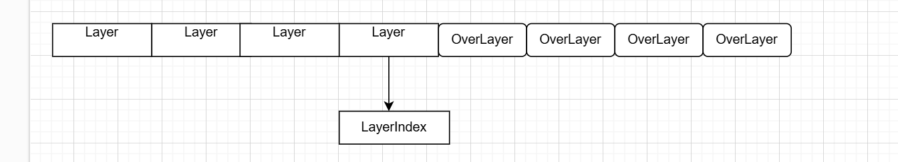
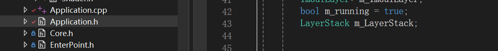

笔记7 Layer
对于应用，我们都需要layer去处理渲染顺序和用户事件响应。
- 渲染顺序层级，我们需要从底层往上处理渲染逻辑，将最新的一层，放在最后渲染。
- 对于事件处理，我们肯定需要曾最上层优先处理，然后层层往下处理。
然后我们优先来看Layer的抽象层。
class HAZEL_API Layer
{
public:
Layer(const std::string& name = "Layer");
virtual ~Layer();
virtual void OnAttach() {}
virtual void OnDetach() {}
virtual void OnUpdate() {}
virtual void OnImGuiRender(){}
virtual void OnEvent(Event& event) { }
inline const std::string& GetName() const { return m_DebugName; }
protected:
std::string m_DebugName;
};
**OnAttach()**：在层被附加（激活）到应用程序时调用，通常用于初始化资源。（例如在使用imgui的时候，我们imgui肯定是在最上层，创建窗口的时候，OnAttach就需要创建imgui窗口和上下文等初始化操作）
**OnDetach()**：在层被移除（卸载）时调用，用于释放资源。（依旧以imgui为例，我们只需要在关闭imgui时销毁上下文和窗口等）
**OnUpdate()**：在每一帧更新时调用，处理与该层相关的逻辑（如渲染或物理计算）。
**OnEvent(Event& event)**：用于处理与该层相关的事件，如用户输入、窗口事件等。
**std::string m_DebugName;**暂时是用string作为不同的层的id
既然我们有了Layer，那我们也必然需要装载Layer的容器去统一管理。
目前，我们使用了Vector为的容器创建的LayerStack类，去统一管理Layer层级。
class HAZEL_API LayerStack
{
public:
LayerStack();
~LayerStack();
void PushLayer(Layer* layer);
void PushOverlay(Layer* overlay);
void PopLayer(Layer* layer);
void PopOverlay(Layer* overlay);
std::vector<Layer*>::iterator begin() { return m_Layers.begin(); }//返回vector的头指针
std::vector<Layer*>::iterator end() { return m_Layers.end(); }///返回尾巴指针
private:
std::vector<Layer*> m_Layers; //存放层级的容器
unsigned int m_LayerInsertIndex = 0; //普通层级的最后一个索引，原本是使用指针，但是改为使用索引了，后面看到我再补充。
};
对于LayerStack的设计，将层级主要分为了俩个层级—–普通层和覆盖层。
普通层依赖于特定的渲染和处理顺序，做为前半层级，覆盖层则优于普通层处理（一般类似ui和调式层），做为后半层级。
Layer就是普通层级。
void LayerStack::PushLayer(Layer* layer)
{
m_Layers.emplace(m_Layers.begin()+m_LayerInsertIndex, layer);
m_LayerInsertIndex++;
}
void LayerStack::PopLayer(Layer* layer)
{
auto it = std::find(m_Layers.begin(), m_Layers.end(), layer);
if (it != m_Layers.end())
{
m_Layers.erase(it);
m_LayerInsertIndex--;
}
}
PushLayer
- 这个函数通过
emplace方法，将layer插入到m_Layers.begin() + m_LayerInsertIndex位置上。 - 每插入一个
layer，m_LayerInsertIndex都会自增 1，因此新插入的layer总是位于之前插入的layer的后面。 - 这种设计使得 “layer” 和 “overlay” 之间有一个明确的分界线，
PushLayer的元素在前，PushOverlay的元素在后。
PopLayer
- 利用find函数找到vector对应的层级，使用erase将后面的元素则整体前进一个单位。
OverLayer就是覆盖层
void LayerStack::PushOverlay(Layer* overlay)
{
m_Layers.emplace_back(overlay);
}
void LayerStack::PopOverlay(Layer* overlay)
{
auto it = std::find(m_Layers.begin(), m_Layers.end(), overlay);
if (it != m_Layers.end())
m_Layers.erase(it);
}
PushOverLayer
很简单就是直接放在vector的最后一层，使用emplace_back
最后的话，也是将layerStack对象放在引擎内的application中
